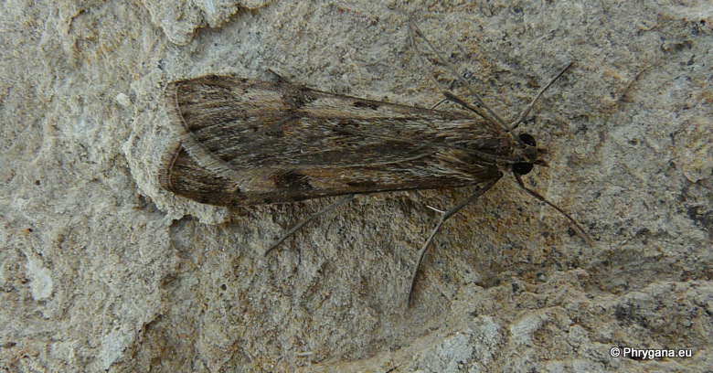
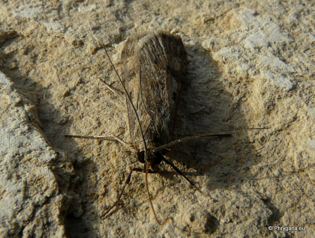
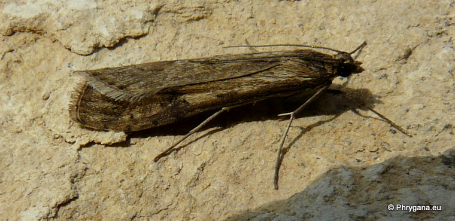
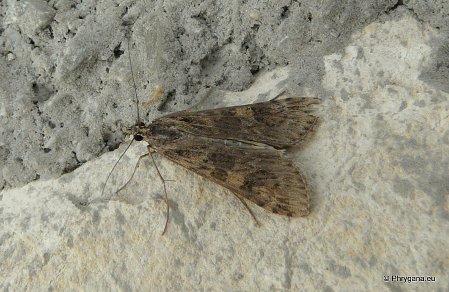

| PHRYGANA | Fauna | Flora |
additions nouveautés |
espèces species |
contact -
info - commentaires phrygana1 (at) gmail.com |
| diversité crétoise -- Cretan diversity | |||||
| Nomophila noctuella (Denis & Schiffermuller 1775) |
| 196 | Fauna | CRAMBIDAE | Spilomelinae | Nomophila |
 Nomophila noctuella Melambes (Agios Giorgos) 10 janvier 2010 |
| en: Rush Veneer de: Wandersünsler |
| Envergure: 28 - 32 mm |
| Adulte: couleur brun clair grisâtre avec des taches brun foncé. Silhouette très allongée. |
| La chenille est polyphage: surtout Fabaceae (Trifolium sp.), diverses plantes herbacées. |
| Espèce bivoltine. |
| Période de vol: janvier mars avril mai juillet septembre novembre |
| Statut en Crète: indigène -- native |
| Biotopes en Crète: phrygana, olivaies, jardins, champs. |
| Distribution: Europe méridionale, Moyen-Orient |
|
 Nomophila noctuella Melambes (Agios Giorgos) 10 janvier 2010 |
|
 Nomophila noctuella Melambes (Agios Giorgos) 10 janvier 2010 |
|
 Nomophila noctuella Melambes (Agios Giorgos) 27 novembre 2010 |
| 09 janvier 2011 |
| © paul fontaine -- © Phrygana.eu 2007 -- 2013 |